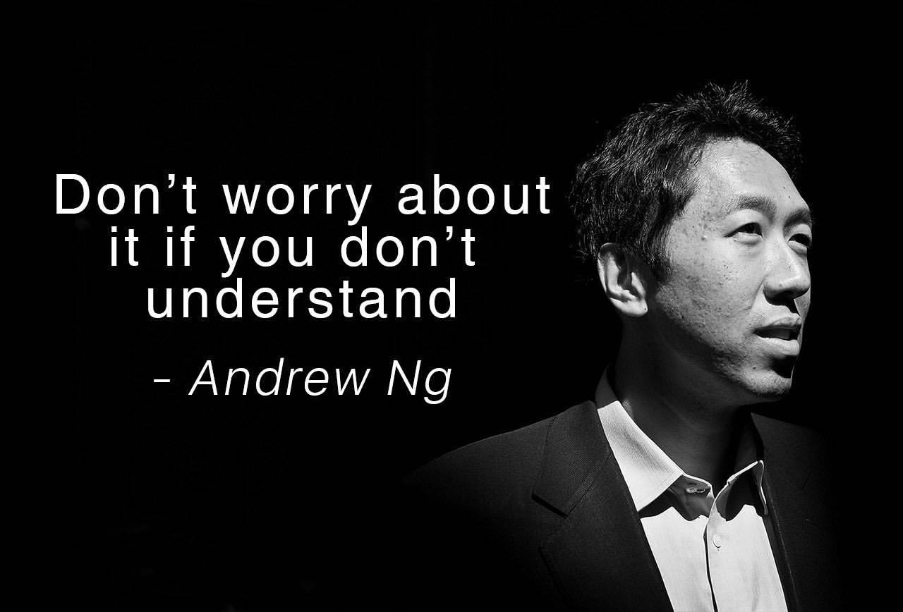
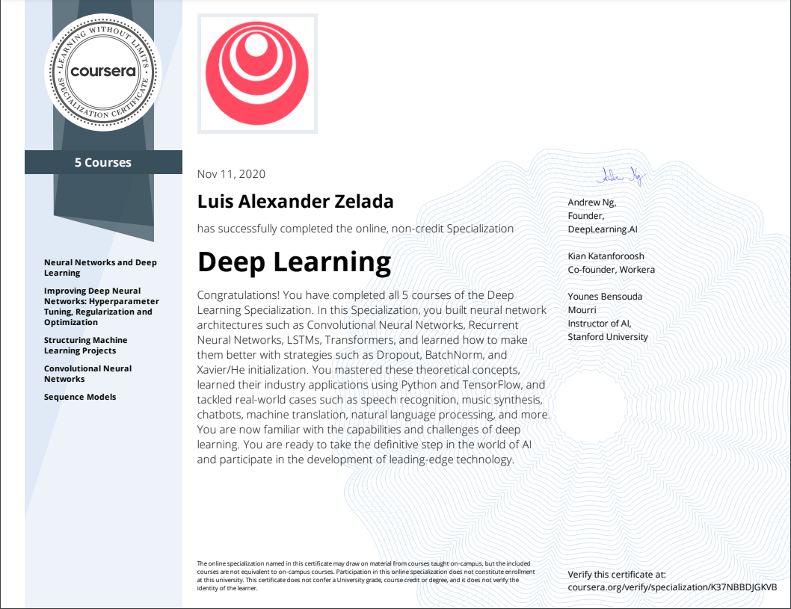

El progreso del año 2021 ya esta al 78%, y es hora de empezar a contarles el progreso de mis estudios en IA.
Este post estará dedicado al primer curso online que me hizo sentir muy feliz y orgulloso fue La especialización de Deep Learning dictada por Andrew NG (el mejor) en Coursera, y es que les voy a ser sinceros no fue nada fácil primero porque todo estaba en inglés y tenía que volver a repasar matemáticas, pero como dice Andrew NG al final de cada video:

Esa frase fue crucial para poder continuar con la especialización y no es broma porque es un mes por cada curso y son cinco!! Luego para recordar tomaba apuntes de cada tema en un bloc de notas en físico de esta forma era mucho más fácil hacer los ejercicios que te dejan cada semana, hay que tener en cuenta que en más de una ocasión tendrás que repetir el video para entender el concepto (si tu motivación es aprender no te importará) abajo una foto de mis apuntes:

Este post no es para compartir la solución de las tareas y/o exámenes, lo que intento hacer es motivarte a estudiar aquel curso que tanto tiempo llevas postergando, siéntate abre la página web y paga con esa tarjeta de crédito la plataforma de educación online que más te guste, por último recuerda rodearte de personas que estén motivadas a aprender y no te juzguen por perseguir tus sueños.
